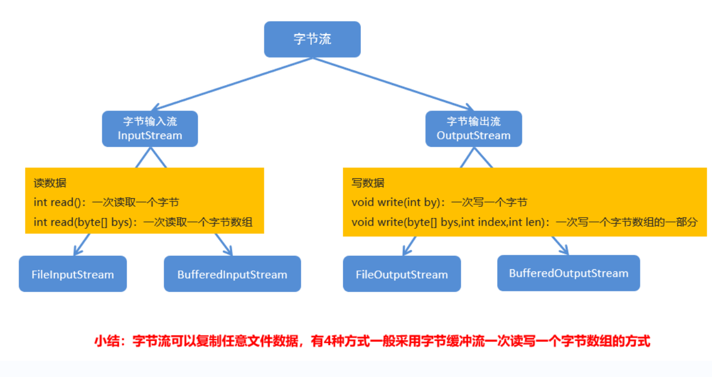
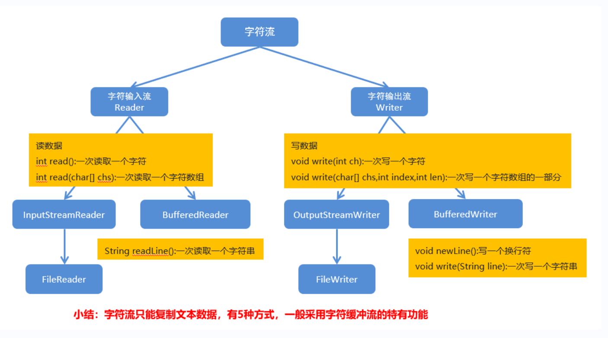

# File 类
# 概述和构造方法
File 类介绍
- 它是文件和目录路径名的抽象表示
- 文件和目录是可以通过 File 封装成对象的
- 对于 File 而言，其封装的并不是一个真正存在的文件，仅仅是一个路径名而已。它可以是存在的，也可以是不存在的。将来是要通过具体的操作把这个路径的内容转换为具体存在的
File 类的构造方法
方法名 说明 File(String pathname) 通过将给定的路径名字符串转换为抽象路径名来创建新的 File 实例 File(String parent, String child) 从父路径名字符串和子路径名字符串创建新的 File 实例 File(File parent, String child) 从父抽象路径名和子路径名字符串创建新的 File 实例 示例代码
public class FileDemo01 {
public static void main(String[] args) {
//File (String pathname)：通过将给定的路径名字符串转换为抽象路径名来创建新的 File 实例。File f1 = new File("E:\\itcast\\java.txt");
System.out.println(f1);
//File (String parent, String child)：从父路径名字符串和子路径名字符串创建新的 File 实例。File f2 = new File("E:\\itcast","java.txt");
System.out.println(f2);
//File (File parent, String child)：从父抽象路径名和子路径名字符串创建新的 File 实例。File f3 = new File("E:\\itcast");
File f4 = new File(f3,"java.txt");
System.out.println(f4);
}}
# 创建功能
方法分类
方法名 说明 public boolean createNewFile() 当具有该名称的文件不存在时，创建一个由该抽象路径名命名的新空文件 public boolean mkdir() 创建由此抽象路径名命名的目录 public boolean mkdirs() 创建由此抽象路径名命名的目录，包括任何必需但不存在的父目录 示例代码
public class FileDemo02 {
public static void main(String[] args) throws IOException {
// 需求 1：我要在 E:\\itcast 目录下创建一个文件 java.txtFile f1 = new File("E:\\itcast\\java.txt");
System.out.println(f1.createNewFile());
System.out.println("--------");
// 需求 2：我要在 E:\\itcast 目录下创建一个目录 JavaSEFile f2 = new File("E:\\itcast\\JavaSE");
System.out.println(f2.mkdir());
System.out.println("--------");
// 需求 3：我要在 E:\\itcast 目录下创建一个多级目录 JavaWEB\\HTMLFile f3 = new File("E:\\itcast\\JavaWEB\\HTML");
// System.out.println(f3.mkdir());System.out.println(f3.mkdirs());
System.out.println("--------");
// 需求 4：我要在 E:\\itcast 目录下创建一个文件 javase.txtFile f4 = new File("E:\\itcast\\javase.txt");
// System.out.println(f4.mkdir());System.out.println(f4.createNewFile());
}}
# 判断和获取功能
判断功能
方法名 说明 public boolean isDirectory() 测试此抽象路径名表示的 File 是否为目录 public boolean isFile() 测试此抽象路径名表示的 File 是否为文件 public boolean exists() 测试此抽象路径名表示的 File 是否存在 获取功能
方法名 说明 public String getAbsolutePath() 返回此抽象路径名的绝对路径名字符串 public String getPath() 将此抽象路径名转换为路径名字符串 public String getName() 返回由此抽象路径名表示的文件或目录的名称 public String[] list() 返回此抽象路径名表示的目录中的文件和目录的名称字符串数组 public File[] listFiles() 返回此抽象路径名表示的目录中的文件和目录的 File 对象数组 示例代码
public class FileDemo04 {
public static void main(String[] args) {
// 创建一个 File 对象File f = new File("myFile\\java.txt");
// public boolean isDirectory ()：测试此抽象路径名表示的 File 是否为目录// public boolean isFile ()：测试此抽象路径名表示的 File 是否为文件// public boolean exists ()：测试此抽象路径名表示的 File 是否存在System.out.println(f.isDirectory());
System.out.println(f.isFile());
System.out.println(f.exists());
// public String getAbsolutePath ()：返回此抽象路径名的绝对路径名字符串// public String getPath ()：将此抽象路径名转换为路径名字符串// public String getName ()：返回由此抽象路径名表示的文件或目录的名称System.out.println(f.getAbsolutePath());
System.out.println(f.getPath());
System.out.println(f.getName());
System.out.println("--------");
// public String [] list ()：返回此抽象路径名表示的目录中的文件和目录的名称字符串数组// public File [] listFiles ()：返回此抽象路径名表示的目录中的文件和目录的 File 对象数组File f2 = new File("E:\\itcast");
String[] strArray = f2.list();
for(String str : strArray) {
System.out.println(str);
}System.out.println("--------");
File[] fileArray = f2.listFiles();
for(File file : fileArray) {
// System.out.println(file);// System.out.println(file.getName());if(file.isFile()) {
System.out.println(file.getName());
}}}}
# 删除功能
方法分类
方法名 说明 public boolean delete() 删除由此抽象路径名表示的文件或目录 示例代码
public class FileDemo03 {
public static void main(String[] args) throws IOException {
// File f1 = new File("E:\\itcast\\java.txt");// 需求 1：在当前模块目录下创建 java.txt 文件File f1 = new File("myFile\\java.txt");
// System.out.println(f1.createNewFile());// 需求 2：删除当前模块目录下的 java.txt 文件System.out.println(f1.delete());
System.out.println("--------");
// 需求 3：在当前模块目录下创建 itcast 目录File f2 = new File("myFile\\itcast");
// System.out.println(f2.mkdir());// 需求 4：删除当前模块目录下的 itcast 目录System.out.println(f2.delete());
System.out.println("--------");
// 需求 5：在当前模块下创建一个目录 itcast, 然后在该目录下创建一个文件 java.txtFile f3 = new File("myFile\\itcast");
// System.out.println(f3.mkdir());File f4 = new File("myFile\\itcast\\java.txt");
// System.out.println(f4.createNewFile());// 需求 6：删除当前模块下的目录 itcastSystem.out.println(f4.delete());
System.out.println(f3.delete());
}}绝对路径和相对路径的区别
- 绝对路径：完整的路径名，不需要任何其他信息就可以定位它所表示的文件。例如：E:\itcast\java.txt
- 相对路径：必须使用取自其他路径名的信息进行解释。例如：myFile\java.txt
# 递归
# 递归
递归的介绍
- 以编程的角度来看，递归指的是方法定义中调用方法本身的现象
- 把一个复杂的问题层层转化为一个与原问题相似的规模较小的问题来求解
- 递归策略只需少量的程序就可描述出解题过程所需要的多次重复计算
递归的基本使用
public class DiGuiDemo {
public static void main(String[] args) {
// 回顾不死神兔问题，求第 20 个月兔子的对数// 每个月的兔子对数：1,1,2,3,5,8，...int[] arr = new int[20];
arr[0] = 1;
arr[1] = 1;
for (int i = 2; i < arr.length; i++) {
arr[i] = arr[i - 1] + arr[i - 2];
}System.out.println(arr[19]);
System.out.println(f(20));
}/*递归解决问题，首先就是要定义一个方法：
定义一个方法 f (n)：表示第 n 个月的兔子对数
那么，第 n-1 个月的兔子对数该如何表示呢？f (n-1)
同理，第 n-2 个月的兔子对数该如何表示呢？f (n-2)
StackOverflowError: 当堆栈溢出发生时抛出一个应用程序递归太深
*/
public static int f(int n) {
if(n==1 || n==2) {
return 1;
} else {
return f(n - 1) + f(n - 2);
}}}递归的注意事项
- 递归一定要有出口。否则内存溢出
- 递归虽然有出口，但是递归的次数也不宜过多。否则内存溢出
# 求阶乘
用递归求 5 的阶乘，并把结果在控制台输出
public class DiGuiDemo01 { | |
public static void main(String[] args) { | |
// 调用方法 | |
int result = jc(5); | |
// 输出结果 | |
System.out.println("5的阶乘是：" + result); | |
} | |
// 定义一个方法，用于递归求阶乘，参数为一个 int 类型的变量 | |
public static int jc(int n) { | |
// 在方法内部判断该变量的值是否是 1 | |
if(n == 1) { | |
// 是：返回 1 | |
return 1; | |
} else { | |
// 不是：返回 n*(n-1)! | |
return n*jc(n-1); | |
} | |
} | |
} |
# 遍历目录
给定一个路径 (E:\itcast)，通过递归完成遍历该目录下所有内容，并把所有文件的绝对路径输出在控制台
public class DiGuiDemo02 { | |
public static void main(String[] args) { | |
// 根据给定的路径创建一个 File 对象 | |
// File srcFile = new File("E:\\itcast"); | |
File srcFile = new File("E:\\itheima"); | |
// 调用方法 | |
getAllFilePath(srcFile); | |
} | |
// 定义一个方法，用于获取给定目录下的所有内容，参数为第 1 步创建的 File 对象 | |
public static void getAllFilePath(File srcFile) { | |
// 获取给定的 File 目录下所有的文件或者目录的 File 数组 | |
File[] fileArray = srcFile.listFiles(); | |
// 遍历该 File 数组，得到每一个 File 对象 | |
if(fileArray != null) { | |
for(File file : fileArray) { | |
// 判断该 File 对象是否是目录 | |
if(file.isDirectory()) { | |
// 是：递归调用 | |
getAllFilePath(file); | |
} else { | |
// 不是：获取绝对路径输出在控制台 | |
System.out.println(file.getAbsolutePath()); | |
} | |
} | |
} | |
} | |
} |
# IO 流
- IO 流介绍
- IO：输入 / 输出 (Input/Output)
- 流：是一种抽象概念，是对数据传输的总称。也就是说数据在设备间的传输称为流，流的本质是数据传输
- IO 流就是用来处理设备间数据传输问题的。常见的应用：文件复制；文件上传；文件下载
- IO 流的分类
- 按照数据的流向
- 输入流：读数据
- 输出流：写数据
- 按照数据类型来分
- 字节流
- 字节输入流
- 字节输出流
- 字符流
- 字符输入流
- 字符输出流
- 字节流
- 按照数据的流向
- IO 流的使用场景
- 如果操作的是纯文本文件，优先使用字符流
- 如果操作的是图片、视频、音频等二进制文件。优先使用字节流
- 如果不确定文件类型，优先使用字节流。字节流是万能的流
# 字节流
# 写数据
字节流抽象基类
- InputStream：这个抽象类是表示字节输入流的所有类的超类
- OutputStream：这个抽象类是表示字节输出流的所有类的超类
- 子类名特点：子类名称都是以其父类名作为子类名的后缀
字节输出流
- FileOutputStream (String name)：创建文件输出流以指定的名称写入文件
使用字节输出流写数据的步骤
- 创建字节输出流对象 (调用系统功能创建了文件，创建字节输出流对象，让字节输出流对象指向文件)
- 调用字节输出流对象的写数据方法
- 释放资源 (关闭此文件输出流并释放与此流相关联的任何系统资源)
public class FileOutputStreamDemo01 {
public static void main(String[] args) throws IOException {
// 创建字节输出流对象//FileOutputStream (String name)：创建文件输出流以指定的名称写入文件FileOutputStream fos = new FileOutputStream("myByteStream\\fos.txt");
/*做了三件事情：
A: 调用系统功能创建了文件
B: 创建了字节输出流对象
C: 让字节输出流对象指向创建好的文件
*/
//void write (int b)：将指定的字节写入此文件输出流fos.write(97);
// fos.write(57);// fos.write(55);// 最后都要释放资源//void close ()：关闭此文件输出流并释放与此流相关联的任何系统资源。fos.close();
}}
# 三种方式
写数据的方法分类
方法名 说明 void write(int b) 将指定的字节写入此文件输出流 一次写一个字节数据 void write(byte[] b) 将 b.length 字节从指定的字节数组写入此文件输出流 一次写一个字节数组数据 void write(byte[] b, int off, int len) 将 len 字节从指定的字节数组开始，从偏移量 off 开始写入此文件输出流 一次写一个字节数组的部分数据 示例代码
public class FileOutputStreamDemo02 {
public static void main(String[] args) throws IOException {
//FileOutputStream (String name)：创建文件输出流以指定的名称写入文件FileOutputStream fos = new FileOutputStream("myByteStream\\fos.txt");
//new File(name)// FileOutputStream fos = new FileOutputStream(new File("myByteStream\\fos.txt"));//FileOutputStream (File file)：创建文件输出流以写入由指定的 File 对象表示的文件// File file = new File("myByteStream\\fos.txt");// FileOutputStream fos2 = new FileOutputStream(file);// FileOutputStream fos2 = new FileOutputStream(new File("myByteStream\\fos.txt"));//void write (int b)：将指定的字节写入此文件输出流// fos.write(97);// fos.write(98);// fos.write(99);// fos.write(100);// fos.write(101);// void write (byte [] b)：将 b.length 字节从指定的字节数组写入此文件输出流// byte[] bys = {97, 98, 99, 100, 101};//byte [] getBytes ()：返回字符串对应的字节数组byte[] bys = "abcde".getBytes();
// fos.write(bys);//void write (byte [] b, int off, int len)：将 len 字节从指定的字节数组开始，从偏移量 off 开始写入此文件输出流// fos.write(bys,0,bys.length);fos.write(bys,1,3);
// 释放资源fos.close();
}}
# 两个小问题
字节流写数据如何实现换行
- windows:\r\n
- linux:\n
- mac:\r
字节流写数据如何实现追加写入
- public FileOutputStream(String name,boolean append)
- 创建文件输出流以指定的名称写入文件。如果第二个参数为 true ，则字节将写入文件的末尾而不是开头
示例代码
public class FileOutputStreamDemo03 {
public static void main(String[] args) throws IOException {
// 创建字节输出流对象// FileOutputStream fos = new FileOutputStream("myByteStream\\fos.txt");FileOutputStream fos = new FileOutputStream("myByteStream\\fos.txt",true);
// 写数据for (int i = 0; i < 10; i++) {
fos.write("hello".getBytes());
fos.write("\r\n".getBytes());
}// 释放资源fos.close();
}}
# 异常处理
异常处理格式
try-catch-finally
try{
可能出现异常的代码;}catch(异常类名 变量名){
异常的处理代码;}finally{
执行所有清除操作;}finally 特点
- 被 finally 控制的语句一定会执行，除非 JVM 退出
public class FileOutputStreamDemo04 {
public static void main(String[] args) {
// 加入 finally 来实现释放资源FileOutputStream fos = null;
try {
fos = new FileOutputStream("myByteStream\\fos.txt");
fos.write("hello".getBytes());
} catch (IOException e) {
e.printStackTrace();
} finally {
if(fos != null) {
try {
fos.close();
} catch (IOException e) {
e.printStackTrace();
}}}}}
# 读数据 (一次读一个字节数据)
字节输入流
- FileInputStream (String name)：通过打开与实际文件的连接来创建一个 FileInputStream ，该文件由文件系统中的路径名 name 命名
字节输入流读取数据的步骤
- 创建字节输入流对象
- 调用字节输入流对象的读数据方法
- 释放资源
示例代码
public class FileInputStreamDemo01 {
public static void main(String[] args) throws IOException {
// 创建字节输入流对象//FileInputStream(String name)FileInputStream fis = new FileInputStream("myByteStream\\fos.txt");
int by;
/*fis.read ()：读数据
by=fis.read ()：把读取到的数据赋值给 by
by != -1：判断读取到的数据是否是 - 1
*/
while ((by=fis.read())!=-1) {
System.out.print((char)by);
}// 释放资源fis.close();
}}
# 复制文本文件
案例需求
把 “E:\itcast\ 窗里窗外.txt” 复制到模块目录下的 “窗里窗外.txt”
实现步骤
复制文本文件，其实就把文本文件的内容从一个文件中读取出来 (数据源)，然后写入到另一个文件中 (目的地)
数据源：
E:\itcast\ 窗里窗外.txt --- 读数据 --- InputStream --- FileInputStream
目的地：
myByteStream\ 窗里窗外.txt --- 写数据 --- OutputStream --- FileOutputStream
代码实现
public class CopyTxtDemo {
public static void main(String[] args) throws IOException {
// 根据数据源创建字节输入流对象FileInputStream fis = new FileInputStream("E:\\itcast\\窗里窗外.txt");
// 根据目的地创建字节输出流对象FileOutputStream fos = new FileOutputStream("myByteStream\\窗里窗外.txt");
// 读写数据，复制文本文件 (一次读取一个字节，一次写入一个字节)int by;
while ((by=fis.read())!=-1) {
fos.write(by);
}// 释放资源fos.close();
fis.close();
}}
# 读数据 (一次读一个字节数组数据)
一次读一个字节数组的方法
- public int read (byte [] b)：从输入流读取最多 b.length 个字节的数据
- 返回的是读入缓冲区的总字节数，也就是实际的读取字节个数
示例代码
public class FileInputStreamDemo02 {
public static void main(String[] args) throws IOException {
// 创建字节输入流对象FileInputStream fis = new FileInputStream("myByteStream\\fos.txt");
/*hello\r\n
world\r\n
第一次：hello
第二次：\r\nwor
第三次：ld\r\nr
*/
byte[] bys = new byte[1024]; //1024 及其整数倍
int len;
while ((len=fis.read(bys))!=-1) {
System.out.print(new String(bys,0,len));
}// 释放资源fis.close();
}}
# 复制图片
案例需求
把 “E:\itcast\mn.jpg” 复制到模块目录下的 “mn.jpg”
实现步骤
- 根据数据源创建字节输入流对象
- 根据目的地创建字节输出流对象
- 读写数据，复制图片 (一次读取一个字节数组，一次写入一个字节数组)
- 释放资源
代码实现
public class CopyJpgDemo {
public static void main(String[] args) throws IOException {
// 根据数据源创建字节输入流对象FileInputStream fis = new FileInputStream("E:\\itcast\\mn.jpg");
// 根据目的地创建字节输出流对象FileOutputStream fos = new FileOutputStream("myByteStream\\mn.jpg");
// 读写数据，复制图片 (一次读取一个字节数组，一次写入一个字节数组)byte[] bys = new byte[1024];
int len;
while ((len=fis.read(bys))!=-1) {
fos.write(bys,0,len);
}// 释放资源fos.close();
fis.close();
}}
# 字节缓冲流
# 构造方法
字节缓冲流介绍
lBufferOutputStream：该类实现缓冲输出流。 通过设置这样的输出流，应用程序可以向底层输出流写入字节，而不必为写入的每个字节导致底层系统的调用
lBufferedInputStream：创建 BufferedInputStream 将创建一个内部缓冲区数组。 当从流中读取或跳过字节时，内部缓冲区将根据需要从所包含的输入流中重新填充，一次很多字节
构造方法：
方法名 说明 BufferedOutputStream(OutputStream out) 创建字节缓冲输出流对象 BufferedInputStream(InputStream in) 创建字节缓冲输入流对象 示例代码
public class BufferStreamDemo {
public static void main(String[] args) throws IOException {
// 字节缓冲输出流：BufferedOutputStream (OutputStream out)BufferedOutputStream bos = new BufferedOutputStream(new FileOutputStream("myByteStream\\bos.txt"));
// 写数据bos.write("hello\r\n".getBytes());
bos.write("world\r\n".getBytes());
// 释放资源bos.close();
// 字节缓冲输入流：BufferedInputStream (InputStream in)BufferedInputStream bis = new BufferedInputStream(new FileInputStream("myByteStream\\bos.txt"));
// 一次读取一个字节数据// int by;// while ((by=bis.read())!=-1) {// System.out.print((char)by);// }// 一次读取一个字节数组数据byte[] bys = new byte[1024];
int len;
while ((len=bis.read(bys))!=-1) {
System.out.print(new String(bys,0,len));
}// 释放资源bis.close();
}}
# 字节流复制视频
案例需求
把 “E:\itcast\ 字节流复制图片.avi” 复制到模块目录下的 “字节流复制图片.avi”
实现步骤
根据数据源创建字节输入流对象
根据目的地创建字节输出流对象
读写数据，复制视频
释放资源
代码实现
public class CopyAviDemo {
public static void main(String[] args) throws IOException {
// 记录开始时间long startTime = System.currentTimeMillis();
// 复制视频// method1();// method2();// method3();method4();
// 记录结束时间long endTime = System.currentTimeMillis();
System.out.println("共耗时：" + (endTime - startTime) + "毫秒");
}// 字节缓冲流一次读写一个字节数组public static void method4() throws IOException {
BufferedInputStream bis = new BufferedInputStream(new FileInputStream("E:\\itcast\\字节流复制图片.avi"));
BufferedOutputStream bos = new BufferedOutputStream(new FileOutputStream("myByteStream\\字节流复制图片.avi"));
byte[] bys = new byte[1024];
int len;
while ((len=bis.read(bys))!=-1) {
bos.write(bys,0,len);
}bos.close();
bis.close();
}// 字节缓冲流一次读写一个字节public static void method3() throws IOException {
BufferedInputStream bis = new BufferedInputStream(new FileInputStream("E:\\itcast\\字节流复制图片.avi"));
BufferedOutputStream bos = new BufferedOutputStream(new FileOutputStream("myByteStream\\字节流复制图片.avi"));
int by;
while ((by=bis.read())!=-1) {
bos.write(by);
}bos.close();
bis.close();
}// 基本字节流一次读写一个字节数组public static void method2() throws IOException {
//E:\\itcast\\ 字节流复制图片.avi// 模块目录下的 字节流复制图片.aviFileInputStream fis = new FileInputStream("E:\\itcast\\字节流复制图片.avi");
FileOutputStream fos = new FileOutputStream("myByteStream\\字节流复制图片.avi");
byte[] bys = new byte[1024];
int len;
while ((len=fis.read(bys))!=-1) {
fos.write(bys,0,len);
}fos.close();
fis.close();
}// 基本字节流一次读写一个字节public static void method1() throws IOException {
//E:\\itcast\\ 字节流复制图片.avi// 模块目录下的 字节流复制图片.aviFileInputStream fis = new FileInputStream("E:\\itcast\\字节流复制图片.avi");
FileOutputStream fos = new FileOutputStream("myByteStream\\字节流复制图片.avi");
int by;
while ((by=fis.read())!=-1) {
fos.write(by);
}fos.close();
fis.close();
}}
# 字符流
字符流的介绍
字符流 = 字节流 + 编码表
中文的字节存储方式
用字节流复制文本文件时，文本文件也会有中文，但是没有问题，原因是最终底层操作会自动进行字节拼接成中文，如何识别是中文的呢？
汉字在存储的时候，无论选择哪种编码存储，第一个字节都是负数
# 编码表
什么是字符集
是一个系统支持的所有字符的集合，包括各国家文字、标点符号、图形符号、数字等
l 计算机要准确的存储和识别各种字符集符号，就需要进行字符编码，一套字符集必然至少有一套字符编码。
常见的字符集
ASCII 字符集：
lASCII：是基于拉丁字母的一套电脑编码系统，用于显示现代英语，主要包括控制字符 (回车键、退格、换行键等) 和可显示字符 (英文大小写字符、阿拉伯数字和西文符号)
基本的 ASCII 字符集，使用 7 位表示一个字符，共 128 字符。ASCII 的扩展字符集使用 8 位表示一个字符，共 256 字符，方便支持欧洲常用字符。是一个系统支持的所有字符的集合，包括各国家文字、标点符号、图形符号、数字等
GBXXX 字符集：
GBK：最常用的中文码表。是在 GB2312 标准基础上的扩展规范，使用了双字节编码方案，共收录了 21003 个汉字，完全兼容 GB2312 标准，同时支持繁体汉字以及日韩汉字等
Unicode 字符集：
UTF-8 编码：可以用来表示 Unicode 标准中任意字符，它是电子邮件、网页及其他存储或传送文字的应用 中，优先采用的编码。互联网工程工作小组（IETF）要求所有互联网协议都必须支持 UTF-8 编码。它使用一至四个字节为每个字符编码
编码规则：
128 个 US-ASCII 字符，只需一个字节编码
拉丁文等字符，需要二个字节编码
大部分常用字（含中文），使用三个字节编码
其他极少使用的 Unicode 辅助字符，使用四字节编码
# 字符串中的编码解码
相关方法
方法名 说明 byte[] getBytes() 使用平台的默认字符集将该 String 编码为一系列字节 byte[] getBytes(String charsetName) 使用指定的字符集将该 String 编码为一系列字节 String(byte[] bytes) 使用平台的默认字符集解码指定的字节数组来创建字符串 String(byte[] bytes, String charsetName) 通过指定的字符集解码指定的字节数组来创建字符串 代码演示
public class StringDemo {
public static void main(String[] args) throws UnsupportedEncodingException {
// 定义一个字符串String s = "中国";
//byte[] bys = s.getBytes(); //[-28, -72, -83, -27, -101, -67]//byte[] bys = s.getBytes("UTF-8"); //[-28, -72, -83, -27, -101, -67]byte[] bys = s.getBytes("GBK"); //[-42, -48, -71, -6]
System.out.println(Arrays.toString(bys));
//String ss = new String(bys);//String ss = new String(bys,"UTF-8");String ss = new String(bys,"GBK");
System.out.println(ss);
}}
# 字符流中的编码解码
字符流中和编码解码问题相关的两个类
InputStreamReader：是从字节流到字符流的桥梁
它读取字节，并使用指定的编码将其解码为字符
它使用的字符集可以由名称指定，也可以被明确指定，或者可以接受平台的默认字符集
OutputStreamWriter：是从字符流到字节流的桥梁
是从字符流到字节流的桥梁，使用指定的编码将写入的字符编码为字节
它使用的字符集可以由名称指定，也可以被明确指定，或者可以接受平台的默认字符集
构造方法
方法名 说明 InputStreamReader(InputStream in) 使用默认字符编码创建 InputStreamReader 对象 InputStreamReader(InputStream in,String chatset) 使用指定的字符编码创建 InputStreamReader 对象 OutputStreamWriter(OutputStream out) 使用默认字符编码创建 OutputStreamWriter 对象 OutputStreamWriter(OutputStream out,String charset) 使用指定的字符编码创建 OutputStreamWriter 对象 代码演示
public class ConversionStreamDemo {
public static void main(String[] args) throws IOException {
//OutputStreamWriter osw = new OutputStreamWriter(new FileOutputStream("myCharStream\\osw.txt"));OutputStreamWriter osw = new OutputStreamWriter(new FileOutputStream("myCharStream\\osw.txt"),"GBK");
osw.write("中国");
osw.close();
//InputStreamReader isr = new InputStreamReader(new FileInputStream("myCharStream\\osw.txt"));InputStreamReader isr = new InputStreamReader(new FileInputStream("myCharStream\\osw.txt"),"GBK");
// 一次读取一个字符数据int ch;
while ((ch=isr.read())!=-1) {
System.out.print((char)ch);
}isr.close();
}}
# 写数据
方法介绍
方法名 说明 void write(int c) 写一个字符 void write(char[] cbuf) 写入一个字符数组 void write(char[] cbuf, int off, int len) 写入字符数组的一部分 void write(String str) 写一个字符串 void write(String str, int off, int len) 写一个字符串的一部分 刷新和关闭的方法
方法名 说明 flush() 刷新流，之后还可以继续写数据 close() 关闭流，释放资源，但是在关闭之前会先刷新流。一旦关闭，就不能再写数据 代码演示
public class OutputStreamWriterDemo {
public static void main(String[] args) throws IOException {
OutputStreamWriter osw = new OutputStreamWriter(new FileOutputStream("myCharStream\\osw.txt"));
//void write (int c)：写一个字符// osw.write(97);// osw.write(98);// osw.write(99);//void writ (char [] cbuf)：写入一个字符数组char[] chs = {'a', 'b', 'c', 'd', 'e'};
// osw.write(chs);//void write (char [] cbuf, int off, int len)：写入字符数组的一部分// osw.write(chs, 0, chs.length);// osw.write(chs, 1, 3);//void write (String str)：写一个字符串// osw.write("abcde");//void write (String str, int off, int len)：写一个字符串的一部分// osw.write("abcde", 0, "abcde".length());osw.write("abcde", 1, 3);
// 释放资源osw.close();
}}
# 读数据
方法介绍
方法名 说明 int read() 一次读一个字符数据 int read(char[] cbuf) 一次读一个字符数组数据 代码演示
public class InputStreamReaderDemo {
public static void main(String[] args) throws IOException {
InputStreamReader isr = new InputStreamReader(new FileInputStream("myCharStream\\ConversionStreamDemo.java"));
//int read ()：一次读一个字符数据// int ch;// while ((ch=isr.read())!=-1) {// System.out.print((char)ch);// }//int read (char [] cbuf)：一次读一个字符数组数据char[] chs = new char[1024];
int len;
while ((len = isr.read(chs)) != -1) {
System.out.print(new String(chs, 0, len));
}// 释放资源isr.close();
}}
# 复制 Java 文件
把模块目录下的 “ConversionStreamDemo.java” 复制到模块目录下的 “Copy.java”
实现步骤
- 根据数据源创建字符输入流对象
- 根据目的地创建字符输出流对象
- 读写数据，复制文件
- 释放资源
public class CopyJavaDemo01 {
public static void main(String[] args) throws IOException {
// 根据数据源创建字符输入流对象InputStreamReader isr = new InputStreamReader(new FileInputStream("myCharStream\\ConversionStreamDemo.java"));
// 根据目的地创建字符输出流对象OutputStreamWriter osw = new OutputStreamWriter(new FileOutputStream("myCharStream\\Copy.java"));
// 读写数据，复制文件// 一次读写一个字符数据// int ch;// while ((ch=isr.read())!=-1) {// osw.write(ch);// }// 一次读写一个字符数组数据char[] chs = new char[1024];
int len;
while ((len=isr.read(chs))!=-1) {
osw.write(chs,0,len);
}// 释放资源osw.close();
isr.close();
}}
# 复制 Java 文件改进版
案例需求
使用便捷流对象，把模块目录下的 “ConversionStreamDemo.java” 复制到模块目录下的 “Copy.java”
实现步骤
根据数据源创建字符输入流对象
根据目的地创建字符输出流对象
读写数据，复制文件
释放资源
代码实现
public class CopyJavaDemo02 {
public static void main(String[] args) throws IOException {
// 根据数据源创建字符输入流对象FileReader fr = new FileReader("myCharStream\\ConversionStreamDemo.java");
// 根据目的地创建字符输出流对象FileWriter fw = new FileWriter("myCharStream\\Copy.java");
// 读写数据，复制文件// int ch;// while ((ch=fr.read())!=-1) {// fw.write(ch);// }char[] chs = new char[1024];
int len;
while ((len=fr.read(chs))!=-1) {
fw.write(chs,0,len);
}// 释放资源fw.close();
fr.close();
}}
# 字符缓冲流
# 介绍
字符缓冲流介绍
BufferedWriter：将文本写入字符输出流，缓冲字符，以提供单个字符，数组和字符串的高效写入，可以指定缓冲区大小，或者可以接受默认大小。默认值足够大，可用于大多数用途
BufferedReader：从字符输入流读取文本，缓冲字符，以提供字符，数组和行的高效读取，可以指定缓冲区大小，或者可以使用默认大小。 默认值足够大，可用于大多数用途
构造方法
方法名 说明 BufferedWriter(Writer out) 创建字符缓冲输出流对象 BufferedReader(Reader in) 创建字符缓冲输入流对象 代码演示
public class BufferedStreamDemo01 {
public static void main(String[] args) throws IOException {
//BufferedWriter(Writer out)BufferedWriter bw = new BufferedWriter(new FileWriter("myCharStream\\bw.txt"));
bw.write("hello\r\n");
bw.write("world\r\n");
bw.close();
//BufferedReader(Reader in)BufferedReader br = new BufferedReader(new FileReader("myCharStream\\bw.txt"));
// 一次读取一个字符数据// int ch;// while ((ch=br.read())!=-1) {// System.out.print((char)ch);// }// 一次读取一个字符数组数据char[] chs = new char[1024];
int len;
while ((len=br.read(chs))!=-1) {
System.out.print(new String(chs,0,len));
}br.close();
}}
# 复制 Java 文件
案例需求
把模块目录下的 ConversionStreamDemo.java 复制到模块目录下的 Copy.java
实现步骤
- 根据数据源创建字符缓冲输入流对象
- 根据目的地创建字符缓冲输出流对象
- 读写数据，复制文件，使用字符缓冲流特有功能实现
- 释放资源
代码实现
public class CopyJavaDemo01 {
public static void main(String[] args) throws IOException {
// 根据数据源创建字符缓冲输入流对象BufferedReader br = new BufferedReader(new FileReader("myCharStream\\ConversionStreamDemo.java"));
// 根据目的地创建字符缓冲输出流对象BufferedWriter bw = new BufferedWriter(new FileWriter("myCharStream\\Copy.java"));
// 读写数据，复制文件// 一次读写一个字符数据// int ch;// while ((ch=br.read())!=-1) {// bw.write(ch);// }// 一次读写一个字符数组数据char[] chs = new char[1024];
int len;
while ((len=br.read(chs))!=-1) {
bw.write(chs,0,len);
}// 释放资源bw.close();
br.close();
}}
# 特有功能
方法介绍
BufferedWriter：
方法名 说明 void newLine() 写一行行分隔符，行分隔符字符串由系统属性定义 BufferedReader:
方法名 说明 String readLine() 读一行文字。 结果包含行的内容的字符串，不包括任何行终止字符如果流的结尾已经到达，则为 null 代码演示
public class BufferedStreamDemo02 {
public static void main(String[] args) throws IOException {
// 创建字符缓冲输出流BufferedWriter bw = new BufferedWriter(new FileWriter("myCharStream\\bw.txt"));
// 写数据for (int i = 0; i < 10; i++) {
bw.write("hello" + i);
//bw.write("\r\n");bw.newLine();
bw.flush();
}// 释放资源bw.close();
// 创建字符缓冲输入流BufferedReader br = new BufferedReader(new FileReader("myCharStream\\bw.txt"));
String line;
while ((line=br.readLine())!=null) {
System.out.println(line);
}br.close();
}}
# 特有功能复制 Java 文件
案例需求
使用特有功能把模块目录下的 ConversionStreamDemo.java 复制到模块目录下的 Copy.java
实现步骤
- 根据数据源创建字符缓冲输入流对象
- 根据目的地创建字符缓冲输出流对象
- 读写数据，复制文件，使用字符缓冲流特有功能实现
- 释放资源
代码实现
public class CopyJavaDemo02 {
public static void main(String[] args) throws IOException {
// 根据数据源创建字符缓冲输入流对象BufferedReader br = new BufferedReader(new FileReader("myCharStream\\ConversionStreamDemo.java"));
// 根据目的地创建字符缓冲输出流对象BufferedWriter bw = new BufferedWriter(new FileWriter("myCharStream\\Copy.java"));
// 读写数据，复制文件// 使用字符缓冲流特有功能实现String line;
while ((line=br.readLine())!=null) {
bw.write(line);
bw.newLine();
bw.flush();
}// 释放资源bw.close();
br.close();
}}
# IO 流小结
字节流

字符流

# 练习案例
# 集合到文件
案例需求
把文本文件中的数据读取到集合中，并遍历集合。要求：文件中每一行数据是一个集合元素
实现步骤
- 创建字符缓冲输入流对象
- 创建 ArrayList 集合对象
- 调用字符缓冲输入流对象的方法读数据
- 把读取到的字符串数据存储到集合中
- 释放资源
- 遍历集合
代码实现
public class TxtToArrayListDemo {
public static void main(String[] args) throws IOException {
// 创建字符缓冲输入流对象BufferedReader br = new BufferedReader(new FileReader("myCharStream\\array.txt"));
// 创建 ArrayList 集合对象ArrayList<String> array = new ArrayList<String>();
// 调用字符缓冲输入流对象的方法读数据String line;
while ((line=br.readLine())!=null) {
// 把读取到的字符串数据存储到集合中array.add(line);
}// 释放资源br.close();
// 遍历集合for(String s : array) {
System.out.println(s);
}}}
# 文件到集合
案例需求
把 ArrayList 集合中的字符串数据写入到文本文件。要求：每一个字符串元素作为文件中的一行数据
实现步骤
- 创建 ArrayList 集合
- 往集合中存储字符串元素
- 创建字符缓冲输出流对象
- 遍历集合，得到每一个字符串数据
- 调用字符缓冲输出流对象的方法写数据
- 释放资源
代码实现
public class ArrayListToTxtDemo {
public static void main(String[] args) throws IOException {
// 创建 ArrayList 集合ArrayList<String> array = new ArrayList<String>();
// 往集合中存储字符串元素array.add("hello");
array.add("world");
array.add("java");
// 创建字符缓冲输出流对象BufferedWriter bw = new BufferedWriter(new FileWriter("myCharStream\\array.txt"));
// 遍历集合，得到每一个字符串数据for(String s : array) {
// 调用字符缓冲输出流对象的方法写数据bw.write(s);
bw.newLine();
bw.flush();
}// 释放资源bw.close();
}}
# 点名器
案例需求
我有一个文件里面存储了班级同学的姓名，每一个姓名占一行，要求通过程序实现随点名器
实现步骤
- 创建字符缓冲输入流对象
- 创建 ArrayList 集合对象
- 调用字符缓冲输入流对象的方法读数据
- 把读取到的字符串数据存储到集合中
- 释放资源
- 使用 Random 产生一个随机数，随机数的范围在：[0, 集合的长度)
- 把第 6 步产生的随机数作为索引到 ArrayList 集合中获取值
- 把第 7 步得到的数据输出在控制台
代码实现
public class CallNameDemo {
public static void main(String[] args) throws IOException {
// 创建字符缓冲输入流对象BufferedReader br = new BufferedReader(new FileReader("myCharStream\\names.txt"));
// 创建 ArrayList 集合对象ArrayList<String> array = new ArrayList<String>();
// 调用字符缓冲输入流对象的方法读数据String line;
while ((line=br.readLine())!=null) {
// 把读取到的字符串数据存储到集合中array.add(line);
}// 释放资源br.close();
// 使用 Random 产生一个随机数，随机数的范围在：[0, 集合的长度)Random r = new Random();
int index = r.nextInt(array.size());
// 把第 6 步产生的随机数作为索引到 ArrayList 集合中获取值String name = array.get(index);
// 把第 7 步得到的数据输出在控制台System.out.println("幸运者是：" + name);
}}
# 集合到文件改进版
案例需求
把 ArrayList 集合中的学生数据写入到文本文件。要求：每一个学生对象的数据作为文件中的一行数据
格式：学号，姓名，年龄，居住地 举例：itheima001, 林青霞，30, 西安实现步骤
- 定义学生类
- 创建 ArrayList 集合
- 创建学生对象
- 把学生对象添加到集合中
- 创建字符缓冲输出流对象
- 遍历集合，得到每一个学生对象
- 把学生对象的数据拼接成指定格式的字符串
- 调用字符缓冲输出流对象的方法写数据
- 释放资源
代码实现
学生类
public class Student {
private String sid;
private String name;
private int age;
private String address;
public Student() {
}public Student(String sid, String name, int age, String address) {
this.sid = sid;
this.name = name;
this.age = age;
this.address = address;
}public String getSid() {
return sid;
}public void setSid(String sid) {
this.sid = sid;
}public String getName() {
return name;
}public void setName(String name) {
this.name = name;
}public int getAge() {
return age;
}public void setAge(int age) {
this.age = age;
}public String getAddress() {
return address;
}public void setAddress(String address) {
this.address = address;
}}测试类
public class ArrayListToFileDemo {
public static void main(String[] args) throws IOException {
// 创建 ArrayList 集合ArrayList<Student> array = new ArrayList<Student>();
// 创建学生对象Student s1 = new Student("itheima001", "林青霞", 30, "西安");
Student s2 = new Student("itheima002", "张曼玉", 35, "武汉");
Student s3 = new Student("itheima003", "王祖贤", 33, "郑州");
// 把学生对象添加到集合中array.add(s1);
array.add(s2);
array.add(s3);
// 创建字符缓冲输出流对象BufferedWriter bw = new BufferedWriter(new FileWriter("myCharStream\\students.txt"));
// 遍历集合，得到每一个学生对象for (Student s : array) {
// 把学生对象的数据拼接成指定格式的字符串StringBuilder sb = new StringBuilder();
sb.append(s.getSid()).append(",").append(s.getName()).append(",").append(s.getAge()).append(",").append(s.getAddress());
// 调用字符缓冲输出流对象的方法写数据bw.write(sb.toString());
bw.newLine();
bw.flush();
}// 释放资源bw.close();
}}
# 文件到集合改进版
案例需求
把文本文件中的数据读取到集合中，并遍历集合。要求：文件中每一行数据是一个学生对象的成员变量值
举例：itheima001, 林青霞，30, 西安实现步骤
- 定义学生类
- 创建字符缓冲输入流对象
- 创建 ArrayList 集合对象
- 调用字符缓冲输入流对象的方法读数据
- 把读取到的字符串数据用 split () 进行分割，得到一个字符串数组
- 创建学生对象
- 把字符串数组中的每一个元素取出来对应的赋值给学生对象的成员变量值
- 把学生对象添加到集合
- 释放资源
- 遍历集合
代码实现
学生类
同上
测试类
public class FileToArrayListDemo {
public static void main(String[] args) throws IOException {
// 创建字符缓冲输入流对象BufferedReader br = new BufferedReader(new FileReader("myCharStream\\students.txt"));
// 创建 ArrayList 集合对象ArrayList<Student> array = new ArrayList<Student>();
// 调用字符缓冲输入流对象的方法读数据String line;
while ((line = br.readLine()) != null) {
// 把读取到的字符串数据用 split () 进行分割，得到一个字符串数组String[] strArray = line.split(",");
// 创建学生对象Student s = new Student();
// 把字符串数组中的每一个元素取出来对应的赋值给学生对象的成员变量值//itheima001, 林青霞，30, 西安s.setSid(strArray[0]);
s.setName(strArray[1]);
s.setAge(Integer.parseInt(strArray[2]));
s.setAddress(strArray[3]);
// 把学生对象添加到集合array.add(s);
}// 释放资源br.close();
// 遍历集合for (Student s : array) {
System.out.println(s.getSid() + "," + s.getName() + "," + s.getAge() + "," + s.getAddress());
}}}